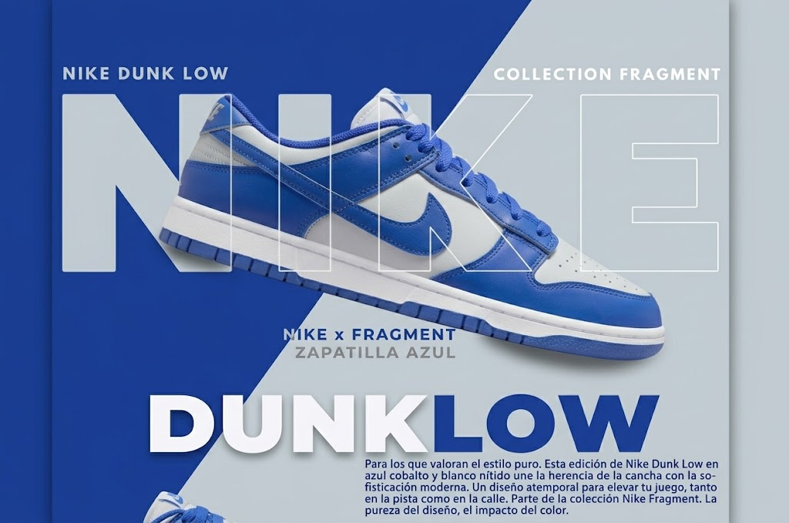
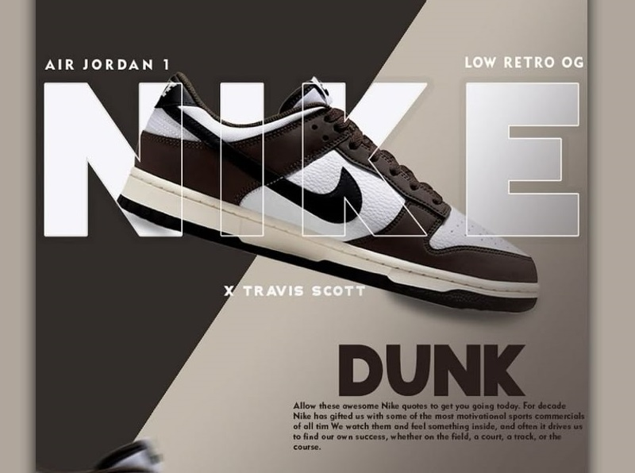

DUNKLOW
Para los que valoran el estilo puro. Esta edición de Nike Dunk Low en azul cobalto y blanco nítido une la herencia de la cancha con la sofisticación moderna. Un diseño atemporal para elevar tu juego, tanto en la pista como en la calle. Parte de la colección exclusiva Nike Fragment: la pureza del diseño y el impacto del color.
Paneles seleccionados a mano con acabado semi-brillante.
Amortiguación reactiva y durabilidad legendaria.

ICONICRETRO
Inspirada en el básquetbol universitario de los años 80, la silueta Retro Heritage redefine la cultura sneaker actual con acolchado de cuello bajo para mayor libertad de movimiento y una estética pulida que trasciende generaciones.
Ajuste anatómico suave y soporte ergonómico en el talón.
Pivote de goma vulcanizada para máximo agarre en asfalto.
DA EL PASO AL FUTURO
El ícono renace con materiales sustentables y precisión de alta costura deportiva.